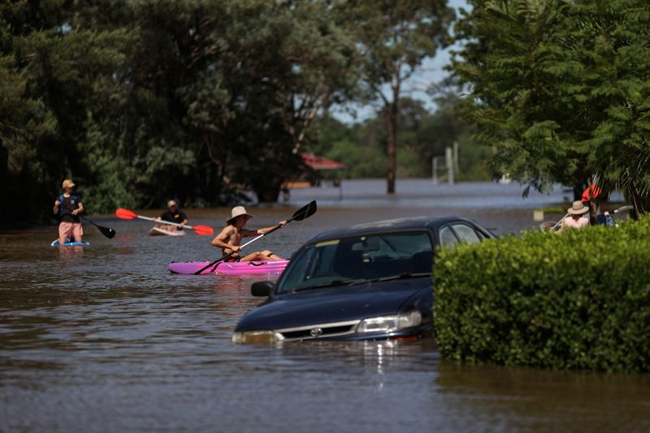

Australian floods kill two, more evacuations as clean-up begins
By Renju Jose and Jonathan Barrett
SYDNEY (Reuters) -The bodies of two men were found in Australia on Wednesday in cars trapped in floodwaters, the first deaths linked to wild weather in recent days that has submerged houses, swept away livestock and cut off entire towns.
More than 40,000 people have been forced to flee their homes as torrential rain sparked dangerous flash floods, and authorities issued new evacuation orders for residents of Sydney’s western regions to move to safety.
In some other areas, a massive clean-up operation began as sunny skies returned for the first time in days, and food and other emergency supplies were flown in over swamped roads.
Authorities were trying to contact the family of a Pakistani national whose body was found by emergency services in a car under six metres of water in Sydney’s northwest.
Police had determined the man was driving a brand new car, on the first day of a new job and unfamiliar with the rural area, New South Wales Police Detective Inspector Chris Laird told media.The reason he could not get out of the vehicle was being investigated.
'It could very well be that the electrics totally failed and he was simply unable to escape from the car which is an absolute tragedy,' Laird said.
Media reported police found a second body in an upturned utility vehicle in floodwaters in Queensland state.
Gladys Berejiklian, premier of New South Wales, the worst-hit state, warned that water levels would keep rising in some areas as major dams overflowed and rivers bulged, with thousands of people were on evacuation watch.
'Catchments will continue to experience flows of water not seen in 50 years and in some places 100 years,' Berejiklian told reporters in Sydney.
The Insurance Council of Australia, the main industry body, said about 17,000 damages claims worth about A$254.2 million ($193.32 million) had been lodged by Wednesday morning across New South Wales and Queensland.
Homes have been submerged, livestock swept away and crops inundated.
There have also been many animal rescues, with craft used to move dogs, cattle, and even an emu, away from the flood waters.In the country’s arid centre, water cascaded down the Uluru rock formation, a rare phenomenon described by the national park as 'unique and extraordinary'.
RECOVERY BEGINS
Prime Minister Scott Morrison said heavy-load helicopters would transport food to supermarkets where supplies were running short.
'The expanse of water that went right across that region was quite devastating to see,' Morrison said in parliament after he toured flood-affected areas by helicopter.
Several hundred defence force personnel would be sent to flood-affected areas over the next few days to help in the recovery, said Emergency Management Minister David Littleproud.
'Their job will be out there cleaning up, making sure that we get rid of the debris, having boots on the ground,' Littleproud said.
Australian Rail Track Corp (ARTC) partially reopened Hunter Valley coal rail lines to Newcastle, the world’s biggest coal export port, but not before supply concerns lifted thermal coal prices to two year highs near $100 a tonne.
The Hunter Valley rail network serves mines run by BHP Group, Glencore Plc, New Hope Corp, Whitehaven Coal and Yancoal Australia, among others.
The Port of Newcastle, which last year shipped 158 million tonnes of coal, slowed ship movements this week but said on Wednesday it was continuing to operate.
Forecasters said the weather system that brought the rain would shift to the island state of Tasmania on Wednesday, bringing downpours and flooding.
(Reporting by Renju Jose, Jonathan Barrett, Melanie Burton and Sonali Paul; editing by Grant McCool and Jane Wardell)
Posted On: 2021-03-24T00:00:00

Content Date: 2021-03-24
Download Date: 2021-04-17
Document ID: L0C04A7B7